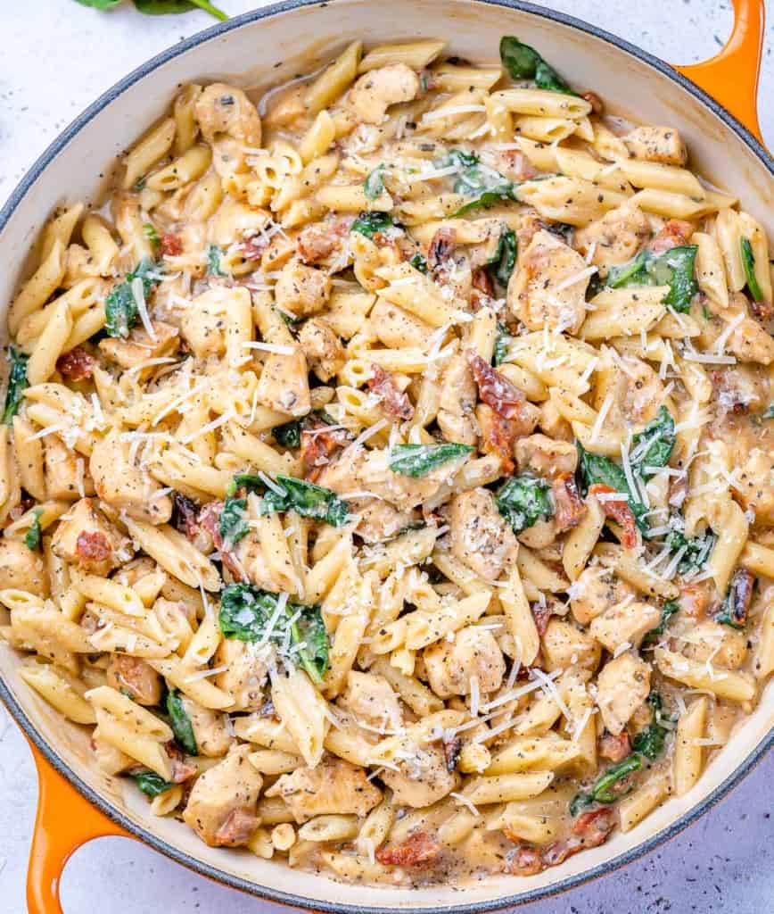

Creamy Tuscan Chicken Pasta

Delicious and easy to make!
Enjoy this delicious Creamy Tuscan chicken pasta recipe for lunch or dinner any day of the week. Quick and easy creamy pasta recipe made Tuscan Style and ready in 30 minutes.
This Creamy chicken pasta recipe is the ultimate comfort meal. It is made with added chicken bites for some added protein, loaded with spinach for a nutrient boost, and infused with creamy Tuscan flavors..
Ingredients
- Pasta of choice: use whatever kind of pasta you already have. You may use gluten-free if needed or lentil pasta for a healthier option.
- Chicken: go with chicken breast for a leaner and healthier option. You may also use boneless and skinless chicken thighs.
- Oil: I used olive oil. You may use avocado oil or grapeseed oil.
- Garlic cloves: I recommend you use fresh garlic cloves and not garlic powder. You may also use the oil from the sun-dried tomatoes.
- Italian seasoning: if you don’t have this handy, use 1/4 tsp of the following seasonings- basil, oregano, rosemary, and thyme.
- Salt and pepper to taste
- Sun-dried tomatoes: use the ones that are packed in oil and not the packets.
- Almond milk: if you don’t have almond milk, use any milk of choice.
- Flour: use any flour you have on hand, or use cornstarch.
- Fresh baby spinach: I prefer that you use fresh spinach. If you want to use frozen, you can, but just thaw and drain first.
- Parmesan cheese: grate your own. You may substitute this cheese with grated Romano Cheese.
How to make Creamy Tuscan Chicken Pasta

- Add the seasoned chicken in a single layer and cook undisturbed for 2-3 minutes, or until golden brown. Stir in the sun-dried tomatoes and continue to cook until cooked through for about 5-7 minutes.

- Stir in the sun-dried tomatoes and continue to cook until cooked through about 5-7 minutes. Pour in the flour and milk mixture over the seared chicken. Allow the sauce to bubble for a few minutes to thicken up. It should take no more than 3-4 minutes. Add spinach.

- Once you add the chopped spinach, stir and cook for a few more minutes until wilted..

- Add cooked pasta together with grated parmesan and stir to combine. Enjoy.
Recipe Notes
- Pasta: use pasta of choice. Gluten-free, whole wheat, lentil pasta, or chickpea pasta.
- Chicken: I used chicken breast, but you may use boneless thighs. Consider using shrimp instead of chicken if desired.
- Spinach: I recommend using fresh spinach. Frozen spinach can be used, but thaw first and drain to remove excess water.
- You may use other veggies like kale.
- Use fresh garlic or replace it with 1 tablespoon of garlic powder.
- Cook the pasta al dente since it will cook again with everything else to prevent having soft and soggy pasta.
- Store leftover chicken pasta in a container and store it in the fridge for up to 3 days.